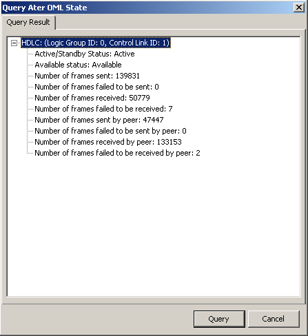

This describes how to query the status of the Ater OML when the GTCS is placed on the MSC side.
Prerequisites
- The LMT runs normally.
- The communication between the LMT and the BSC is normal.
- The HDLC link is configured.
Context
If the GTCS requires remote configuration, at least one Ater OML needs to be configured. The Ater OML of the BSC is in transmission optimization mode. A maximum of two links (in active/standby mode) can be configured.
Procedure
- Through GUI
- On the LMT, choose . A dialog box is displayed, as shown in Figure 1.
Figure 1 Query Ater OML State dialog box
- Click Query to continue the query.
- Through MML
- Run the LST ATEROML command on the Local Maintenance Terminal to query Ater OM links.
Copyright © Huawei Technologies Co., Ltd.